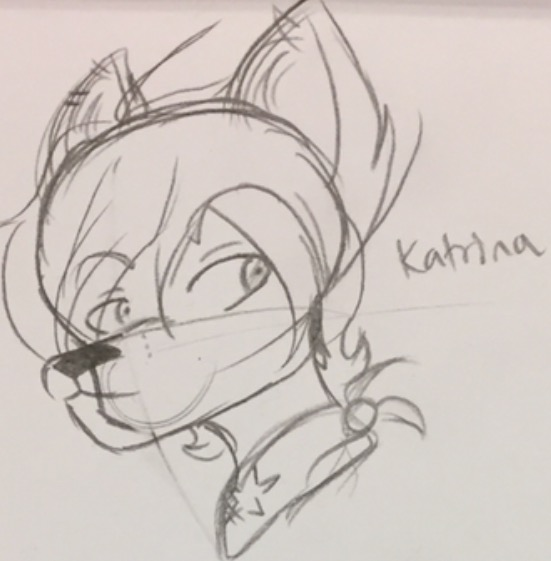

These are character biographies for a work-in-progress series I'm working on.
/*

*/
Katrina Stoicheio:
Katrina is the co.leader of her group. She's a brash, rebellious, and
confident in her decisions, even if most of them don't work. However,
she also has a heart of gold deep down, and treats her close friends as if they
were her family. Some of her interests include tourism, playing electric guitar in a
small band, and air-gliding.
Alice Usagi:
Alice is the acrobat of the team. She can hastily get from point A to point B with
little to no trouble, but she isn't exactly the strongest of the team. She's shy and quiet most
of the time, but can also be brave like her best friend, Katrina, at times. Along with being
athletic, she's also a rising amatuer EDM artist hoping to make it big like her role models. Her
interests include playing keyboard, going to dance competitions, making music, etc.
Cleo Patricka:
The brains of the team, Cleo is one of the more sane, calmer characters of the bunch.
He's the one who usually comes up with the plans for assigned missions, trying to be organized.
Despite this, he argues with Katrina time to time due to the differences and whatnot, causing
him to lose his temper once in a while. His interest include playing piano, drawing, writing, etc.
Daniel "Waltz" Tenzon:
Waltz is the brawns of the team. He's a former wrestler turned bodyguard. Waltz is usually quiet and keeps his thoughts
to himself most of the time, but he speaks against others when he feels it's necessary. When he isn't busy carrying out
his side of the missions, he stays with Cleo, his best friend, and helps with his plans. His interest
include drumming, exercising, etc.
Enkidu:
Enkidu is the archmage of the team, and the medic. He knows all kinds of magic from spritual training. Despite this,
he's actually the weakest of the team. Enkidu is shy, and he tries to be careful with everything he does,
and really hates short-range combat. He's also technically the oldest person in the team, as well as almost every other person. Enkidu
Roselyn Smith:
Way too optimistic cat who just won't shut up.